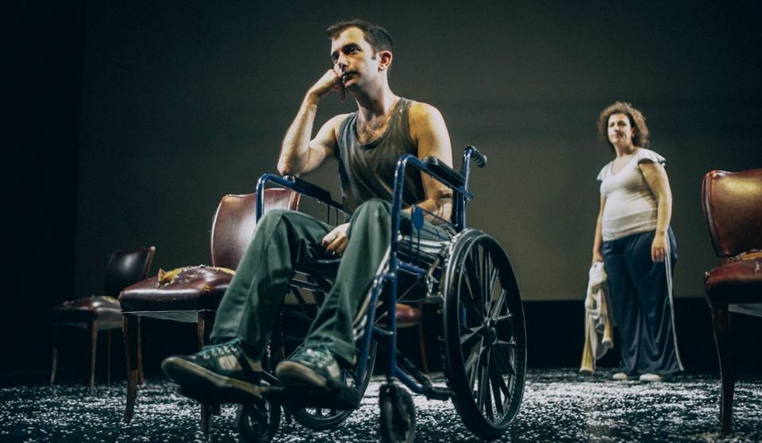

Hamlet
William Shakespeare.
Hamlet es una tragedia de William Shakespeare, escrita entre 1599 y 1601.
La obra, situada en Dinamarca.La obra se considera una de las más poderosas e influyentes tragedias en la literatura inglesa. Protagonizada por Joaquín Furriel y dirigida por Rubén Szuchmacher.
Mas informacion
Un tranvia llamado deseo
Tennessee Williams.
Un tranvía llamado Deseo es una obra de teatro de Tennessee Williams escrita en 1947. Protagonizada por Diego Peretti y Erica Rivas. Dirigida por Daniel Veronese.
La obra se estrenó en Broadway el 3 de diciembre de 1947 y fue galardonada con el Premio Pulitzer de Drama en 1948.
Mas informacion
La muerte de un viajante
Arthur Miller.
La muerte de un viajante es una obra de teatro de Arthur Miller escrita en 1949.
La obra se estrenó en Broadway el 10 de febrero de 1949, en el Morosco Theatre, bajo la dirección de Elia Kazan.
Mas informacion
El acompañamiento
Carlos Gorostiza.
El acompañamiento es una obra de teatro de Carlos Gorostiza escrita en 1962. En esta oportunidad la protagonizan dos mujeres que la hacen propia y la llevan a un lugar de intimidad y emoción. Laura y Lidia Bortnik, dos hermanas, se reencuentran en el escenario para interpretar a dos amigas de toda la vida.
.
Mas informacion

Mi hijo sólo camina más lento
Thierry Illouz.
Mi hijo sólo camina más lento es una obra de teatro de Thierry Illouz escrita en 2016. La obra se estrenó en el Teatro del Pueblo en 2017. La obra cuenta la historia de un padre que se enfrenta a la realidad de su hijo con discapacidad.
Mas informacion
El campeón
Fernando Zabala.
El campeón es una obra de teatro de Fernando Zabala escrita en 2017. La obra se estrenó en el Teatro del Pueblo en 2018. La obra cuenta la historia de un boxeador retirado que se enfrenta a la realidad de su hijo con discapacidad. Dirigida por Mariano Dossena y protagonizada por Christian Thorsen, con el asesoramiento en boxeo de Sergio Maravilla Martínez.
Mas informacion